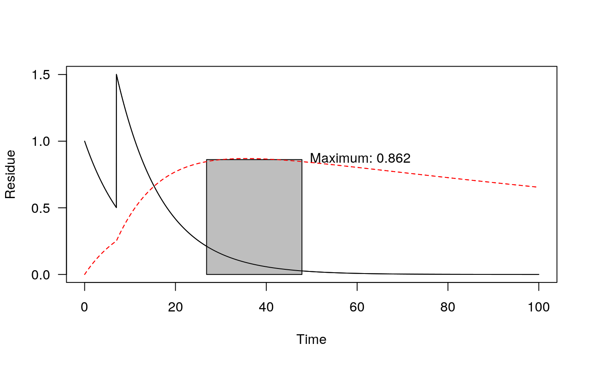
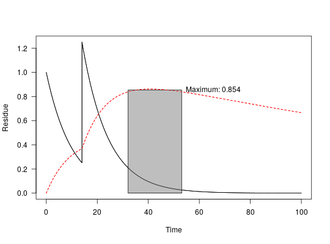

If the number of application cycles n is greater than 1, the
application pattern specified in applications is repeated n
times, with an interval i.
sawtooth(x, n = 1, i = 365, applications = data.frame(time = seq(0, 0 + n * i, length.out = n), amount = 1))
one_box objectapplications is specified, n is ignoredapplications is specified, i
is ignoredapplications = data.frame(time = seq(0, 14, by = 7), amount = c(1, 2, 3)) pred <- one_box(10) plot(sawtooth(pred, applications = applications))m_2 <- mkinmod(parent = mkinsub("SFO", "m1"), m1 = mkinsub("SFO"))#>fit_2 <- mkinfit(m_2, FOCUS_2006_D, quiet = TRUE) pred_2 <- one_box(fit_2) pred_2_saw <- sawtooth(pred_2, 2, 7) plot(pred_2_saw, max_twa = 21, max_twa_var = "m1")max_twa(pred_2_saw)#> $max #> parent m1 #> 66.01096 85.08484 #> #> $window_start #> parent m1 #> 0.00 32.09 #> #> $window_end #> parent m1 #> 21.00 53.09 #>